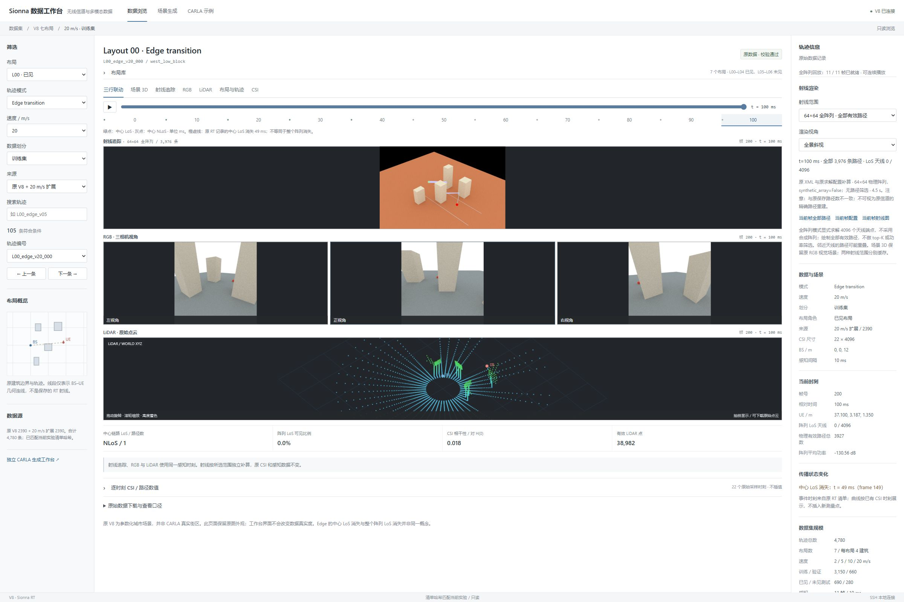
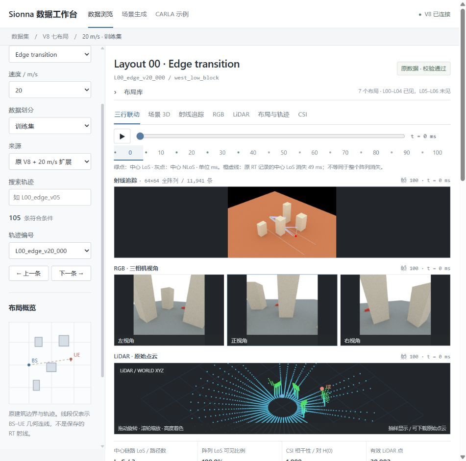

Historical CSI
10 channel instants before the prediction origin.
This page visualizes a representative part of our current Sionna RT ground-level dataset. It shows an edge-transition trajectory, synchronized sensing views, and measured CSI evolution across three propagation scenarios.
A saved V8 workbench view shows the ground layout, user movement, Sionna RT propagation, and synchronized RGB and LiDAR sensing for one representative trajectory.

Move through the saved frames of trajectory L00_edge_v20_000. Each frame shows the ray-tracing and sensing views captured at the selected instant.

Future sensing frames are displayed for dataset inspection only. They are not available to a one-shot predictor at t = 0.
These are CSI-to-CSI properties of the dataset across prediction horizons, not prediction NMSE. The curves summarize 797 trajectories per scenario.
Median normalized complex-channel correlation, relative to the prediction start.
Statistics use stored CSI at 1, 5, 10, ..., 100 ms. This diagnostic cohort does not cover every trajectory in the complete dataset.
The complete CSI and sensor files remain in dataset storage; this page provides a compact, verified public preview.
10 channel instants before the prediction origin.
12 target horizons from 1 to 100 ms.
RGB, LiDAR and position records with timestamps.
Scenario, layout, speed and path visibility where available.
Data sources: analysis/v8_temporal_horizon_summary.csv, analysis/v8_edge_los_visibility_summary.json, and saved V8 workbench captures. No curve on this page represents a model result.